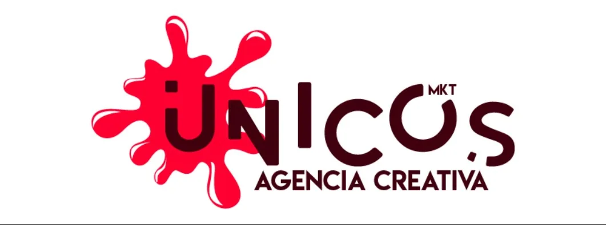

Resultados medibles
- +30% en la organización de los datos de clientes y campañas
- +35% de productividad con herramientas de automatización
- +20% de interacción con clientes gracias a las campañas
DISEÑO · MARKETING · WEB
Agencia creativa de marketing, diseño y desarrollo web que cofundé para ayudar a empresas y emprendimientos a construir una marca sólida y visible.

ÚNICOS · 07 / 13// 01 · LA MISIÓN
Únicos MKT fue una agencia creativa que fundé junto a un socio entre 2019 y 2021. Nuestra propuesta era ofrecer un servicio integral —estrategia, identidad visual, publicidad, contenido digital y desarrollo web— para que cada cliente proyectara una imagen coherente y profesional en todos sus canales, sin tener que coordinar varios proveedores. Ambos participábamos en la conceptualización y el diseño de cada proyecto; yo lideraba además el área de desarrollo web y las herramientas digitales con las que gestionábamos clientes y campañas. En 2021, cada socio decidió emprender un camino profesional distinto —en mi caso, continuar mi formación en programación en Canadá—, por lo que cerramos la agencia de común acuerdo.
Creatividad sin límites, soluciones únicas para cada cliente.
La identidad de la agencia se construyó alrededor de una mancha roja vibrante: un símbolo de la creatividad en su forma más pura, de la explosión de ideas y del pensamiento fuera de lo convencional que queríamos llevar a cada proyecto.
La tipografía combina "únicos" con "MKT" en un café oscuro moderno, junto al descriptor "Agencia creativa", para transmitir cercanía y profesionalismo a la vez.
// QUÉ SE CONSTRUYÓ
// ÁREAS DE SERVICIO
Un mismo equipo acompañaba a cada cliente desde la creación de su marca hasta su presencia en medios impresos y digitales, lo que garantizaba coherencia en todos los puntos de contacto.
Creación y renovación de marcas: logotipo y sus versiones, paleta de color, tipografía y manual de marca para asegurar un uso consistente en cualquier aplicación.
Volantes, pendones, catálogos, brochures y piezas promocionales pensadas para captar la atención y comunicar ofertas con claridad.
Estrategia de contenido, plantillas para redes sociales, banners y newsletters que mantenían la identidad de cada marca en sus canales digitales.
Sitios corporativos y landing pages en WordPress y con código a medida, adaptados a celulares y alineados con la identidad visual del cliente.
Diseño de estampados para camisetas, bolsos y artículos promocionales que llevaban la marca más allá de la pantalla.
Bases de datos para gestionar clientes y campañas, y herramientas de automatización que hicieron más eficiente la operación interna de la agencia.
// ARCHIVO DE TRABAJOS
Una parte del archivo de esos años no se conservó. Estas son las piezas recuperadas, que dan cuenta del alcance y la variedad del trabajo realizado.
Identidad visual: logo, construcción, elementos, tipografía, colores, usos y portada.
Manual de marca: colores, fuentes, recursos, logos, usos e ideas de aplicación.
Logo con sus versiones, banner, plantillas de folleto, publicaciones e ilustración.
Branding integral: logo, isotipo, brochure y flyers.
Ver el proyecto completo →Volantes, banners y piezas promocionales.
Otras marcas creadas en la agencia.
Toca una imagen para verla en pantalla completa.
// SISTEMA VISUAL
Toca un color para copiar su código.
MISIÓN CUMPLIDA
¿Buscas un aliado creativo para tu marca?
Integro diseño, marketing y tecnología para que tu marca se vea profesional y llegue a más clientes.